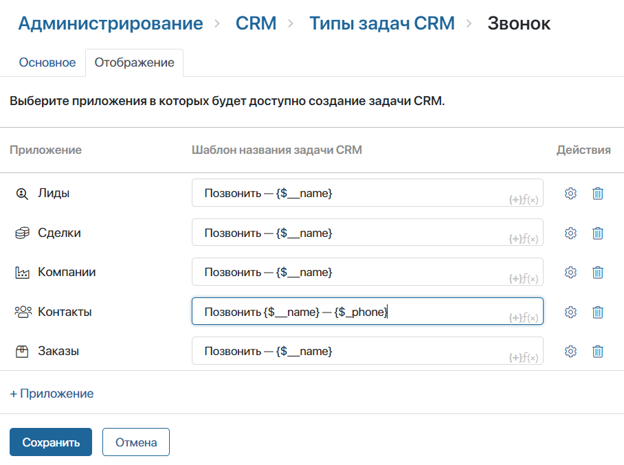

CRM tasks help to arrange the sales department’s work with customers. They allow you to track managers’ activities on leads, deals, companies, contacts, etc.
The following types of CRM tasks are available in the system by default: Call, Meeting, Webinar, and Email. You can customize their settings, as well as create custom task types. For any CRM task type, you can set:
- Name.
- Icon.
- Default duration.
- A set of fields and buttons on task pages.
- Task name template.
- Apps by items of which you can create tasks.
General CRM task settings
Users included in the Administrators group can edit default and custom CRM task types.
To change the task settings, go to the Administration > CRM > Types of CRM Tasks workspace. On the opened page, click the gear icon next to the name of the task type.
On the General tab, fill in the fields:
- Name. Specify the name of the CRM task type.
- Code. The field displays the code of the CRM task type. It is set when the task is created and cannot be changed.
- Icon. Select the icon that will be displayed next to the task type name for easy visual search.
- Form. You can customize the CRM task page, such as fields displayed during its creation, viewing, and editing, as well as add buttons. Read more in the Customize CRM task pages article.
- Default duration. Set the default duration of the task in days, hours, and minutes. The user will be able to set a different duration when creating the task.
To apply the settings, click Save at the bottom of the page.
Display CRM task in apps
The system administrator can:
- Specify for which apps the CRM task is available.
- Set the task name template for each app.
- Choose what information from the app to display on the task page.
Configure task availability in apps
By default, a CRM task can be assigned for items of the Leads, Deals, Companies, and Contacts apps. To change the list of apps apps for which the task is available, perform the following steps:
- Go to the Administration > CRM > Types of CRM Tasks workspace.
- Сlick the gear icon next to the task name in the list.
- On the opened page, click the Display tab.
- To add an app to the list, click +App and select the required option. You can specify an app of any type: Standard, Event, or Document.
- To remove an app from the list, click the recycle bin icon next to it.
- Save the settings.
Users will be able to assign a CRM task to items in any app in the list. This can be done:
- On the item page in the Associated Tasks widget. Please note that in this case, you cannot display tasks assigned to the related item in this widget.
- In the Tasks > CRM Tasks workspace.
If you remove an app from the list, the previously assigned tasks will be saved in the system and users will be able to complete them.
Set CRM task name template
When assigning a CRM task, its name is filled in automatically. You can set your own name template, for example, if the company has set standards for task names. The user will be able to edit it when creating the task.
To change the template:
- In Administration > CRM > Types of CRM Tasks, click the gear icon next to the task type.
- Click the Display tab.
- On the opened page, change the task name template for each app. The following templates are set by default:
- For a task of the Call type: Call {$__name}.
- For a task of the Meeting type: Hold a meeting on {$__name}.
- For a task of the Webinar type: Organize a webinar for {$__name}.
- For a task of the Email type: Write to {$__name}.
- For a task of the custom type: Complete {$__name} task.
In these templates, {$__name} is a variable with the name of the app item for which the task is created, such as a deal or a company.

- Add app context variables to the template text by clicking the {+} icon. For example, for the Call task in the Contacts field, set the Call {$__name} — {$_phone} template. Then the name of the call will immediately display the phone number specified in the Work phone variable of the Contacts app.
You can also add the DateTime() function to the template by clicking the f(x) icon. For more information on creating templates, refer to the App item name article.
- Save the settings.
начало внимание
If a CRM task is assigned during a business process, its name template is customized in the corresponding activity of this process.
конец внимание
Display app fields on the CRM task page
CRM tasks are assigned for app items, e.g., deals, leads, or companies. App fields can be shown on the right pane of the task so that the executor can see all the necessary information without switching to the item page.

To select the fields to be displayed:
- In the Administration > CRM > Types of CRM Tasks workspace, click the gear icon next to the CRM task.
- Go to the Display tab.
- Click the gear icon next to the app name.
- In the window that opens, add fields to the list.

- Click Save.
The user will see the specified information in the sidebar of the task page. If the field is not filled on the item page, it will not be displayed in the task.
Found a typo? Select it and press Ctrl+Enter to send us feedback